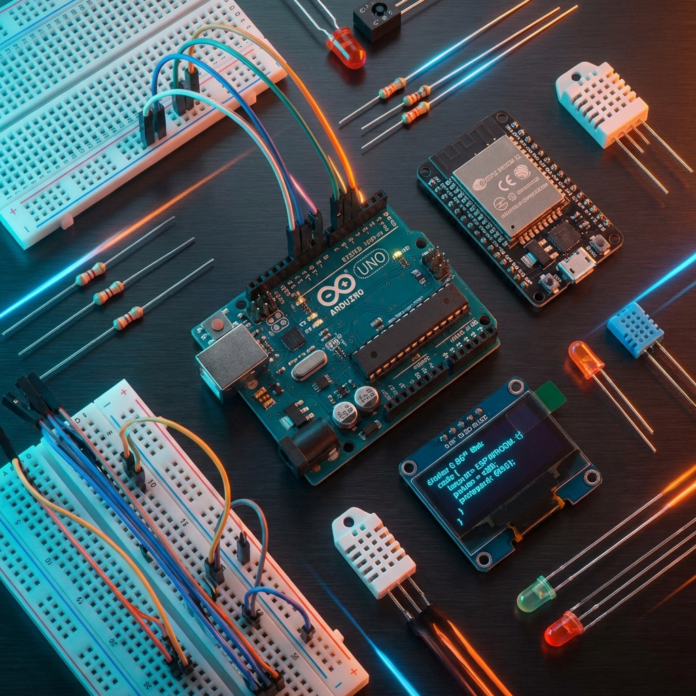

โมดูลอิเล็กทรอนิกส์ DIY
ยินดีต้อนรับสู่คู่มือการใช้งานโมดูลอิเล็กทรอนิกส์ต่างๆ ที่มีจำหน่ายในท้องตลาดไทย สำหรับการพัฒนาโปรเจค DIY กับบอร์ด Arduino, ESP32, และ STM32

📚 เกี่ยวกับคู่มือนี้
คู่มือนี้รวบรวมข้อมูลการใช้งานโมดูลอิเล็กทรอนิกส์ยอดนิยมที่สามารถหาซื้อได้ง่ายในประเทศไทย พร้อมด้วย:
- 📌 คำอธิบายการทำงาน - เข้าใจหลักการทำงานของแต่ละโมดูล
- 🔌 ไดอะแกรมการต่อสาย - วงจรการเชื่อมต่อที่ชัดเจนสำหรับทุกแพลตฟอร์ม
- 💻 โค้ดตัวอย่าง - โค้ดพร้อมใช้งานสำหรับ Arduino, ESP32, และ STM32
- 🛠️ โปรเจค DIY - ไอเดียและตัวอย่างการประยุกต์ใช้งานจริง
พื้นฐานทฤษฎี (Electronics Foundations)
เพื่อความเข้าใจที่ลึกซึ้งยิ่งขึ้น คุณสามารถศึกษาหลักการทางทฤษฎี อุปกรณ์พื้นฐาน และมาตรฐานต่างๆ ได้ที่ คู่มือพื้นฐานอิเล็กทรอนิกส์ ซึ่งเป็นเนื้อหาหลักที่ใช้ควบคู่กับคู่มือนี้ครับ
🎯 หมวดหมู่โมดูล
🌡️ เซ็นเซอร์ (Sensors)
เซ็นเซอร์ต่างๆ สำหรับรับข้อมูลจากสภาพแวดล้อม
- DHT11/DHT22 - วัดอุณหภูมิและความชื้น
- HC-SR04 - วัดระยะทางด้วยคลื่นอัลตราโซนิก
- PIR - ตรวจจับการเคลื่อนไหว
- LDR/BH1750 - วัดความเข้มแสง
- DS18B20 - วัดอุณหภูมิแบบกันน้ำ
📺 จอแสดงผล (Displays)
จอแสดงผลสำหรับแสดงข้อมูลและสร้าง UI
- LCD 16x2/20x4 - จอ LCD พร้อม I2C
- OLED - จอ OLED ความละเอียดสูง
- TFT Display - จอสีแบบ TFT
📡 การสื่อสาร (Communication)
โมดูลสำหรับการสื่อสารไร้สายและเครือข่าย
- Bluetooth HC-05/HC-06 - สื่อสารผ่าน Bluetooth
- WiFi ESP8266/ESP32 - เชื่อมต่อ WiFi และ IoT
- RF NRF24L01 - สื่อสารไร้สายระยะไกล
⚙️ มอเตอร์และการควบคุม (Motors & Control)
โมดูลสำหรับควบคุมการเคลื่อนไหวและกลไก
- DC Motor + L298N - ควบคุมมอเตอร์ DC
- Servo Motor - ควบคุมมุมการหมุน
- Stepper Motor - ควบคุมการหมุนแบบแม่นยำ
🔋 พลังงานและรีเลย์ (Power & Relay)
โมดูลจัดการพลังงานและควบคุมอุปกรณ์ไฟฟ้า
- Relay Module - สวิตช์อิเล็กทรอนิกส์
- Power Supplies - แหล่งจ่ายไฟและ Regulator
- Battery Management - จัดการแบตเตอรี่
🚀 เริ่มต้นใช้งาน
ความต้องการพื้นฐาน
- Arduino IDE หรือ PlatformIO
- บอร์ด Arduino (Uno, Nano, Mega, etc.)
- สายUSB สำหรับการอัปโหลด
- Arduino IDE + ESP32 Board Package หรือ PlatformIO
- บอร์ด ESP32 DevKit
- สาย Micro-USB หรือ USB-C
- STM32CubeIDE หรือ PlatformIO
- บอร์ด STM32 (Blue Pill, Black Pill, Nucleo, etc.)
- ST-Link V2 Programmer
การติดตั้ง Library
สำหรับ Arduino IDE:
สำหรับ PlatformIO:
💡 เคล็ดลับการใช้งาน
การเลือกโมดูล
- เลือกโมดูลที่มีแรงดันไฟเข้ากันได้กับบอร์ดของคุณ (3.3V หรือ 5V)
- ตรวจสอบว่าโมดูลรองรับการสื่อสารแบบที่ต้องการ (I2C, SPI, UART)
- อ่านข้อมูล datasheet เพื่อเข้าใจข้อจำกัดและคุณสมบัติ
ข้อควรระวัง
- ESP32 และ STM32 ส่วนใหญ่ใช้ไฟ 3.3V - ห้ามต่อสัญญาณ 5V โดยตรง
- ใช้ Resistor หรือ Level Shifter เมื่อต่อระหว่างอุปกรณ์ที่ใช้แรงดันต่างกัน
- ตรวจสอบกระแสที่ใช้ของโมดูลก่อนต่อเข้ากับพินของบอร์ด
🔗 แหล่งข้อมูลเพิ่มเติม
📝 การมีส่วนร่วม
หากคุณต้องการเพิ่มเติมข้อมูลหรือแก้ไขเนื้อหา สามารถติดต่อได้ที่ GitHub Repository
สร้างด้วย ❤️ โดย GhostMicro Community